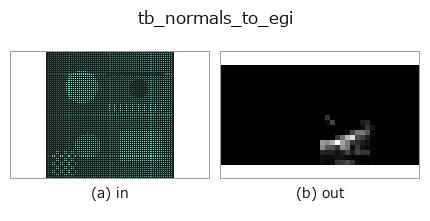

typed op• 数据种类:points → image
• 调用:fullseye.apply(img, "tb_normals_to_egi", a=0.5, b=0.5)(2-D 的模型是一张图 + 两个标量旋钮 a,b∈[0,1])

*图为在 128×128 合成输入上实际运行的输出。左为输入，右为输出。点云以俯视散点显示(亮度 = z)，一维序列为折线，体数据为沿 z 的最大值投影，视频为中间帧，复数图像为幅值；无法成像的返回值直接显示数值。*
扫描旋钮 a(0.1 / 0.5 / 0.9，另一旋钮取默认):
▸ tb_normals_to_egi: knob a sweep (docs site)
扫描旋钮 b(0.1 / 0.5 / 0.9，另一旋钮取默认):
▸ tb_normals_to_egi: knob b sweep (docs site)
阶段(前置算子 → 本算子，从左到右):
▸ tb_normals_to_egi: stages (docs site)
换别的图像(合成场景 / 照片 / 硬币。上排为输入，下排为对应输出。旋钮取默认):
▸ tb_normals_to_egi: other inputs (docs site)
法线 `(N,3) → 扩展高斯图像 (n_el, n_az) 的 image2d`。
> 以下的详细说明为原文 —— 摘要与标题已翻译。
方向の 2-D ヒストグラム(Horn, *Extended Gaussian Images*, Proc. IEEE 72(12)
1984)。「どの向きの面がどれだけあるか」の地図で、平面が支配的な物体では
1 つの bin に山が立つ。不可逆 —— bin 幅ぶんの方向解像度を捨てる。
捨てた量は測れる: 最頻 bin の中心方向と入力の平均方向の角度差が量子化誤差で、
既定 (36, 18) では bin 幅 10 度に対し実測 3.7 度(`selftest` が出す)。
仰角の bin は `sin(el)` で等分する(等立体角)。度で等分すると極が過剰に
細かくなり、「北極に面が集中している」という嘘の山が立つ。
Args:
normals: (N, 3)。
n_az: 方位の bin 数(既定 36 = 10 度刻み)。
n_el: 仰角の bin 数(既定 18)。
★位置の点群を渡しても例外は出ない。`backends_typed.TYPE_TO_SORT` が
`normals を points` に畳んでいるので、進化器も台帳も両者を区別しない。
この op は方向しか見ない(長さは捨てる)ので、`(N,3)` の座標を渡すと
「原点から各点を見た向き」のヒストグラムがもっともらしく返る。実測
(2026-09-08、200 点の曲線 vs 全部真上の法線): 非零 bin が 1 → 12、
最大 bin が 200 → 44 に変わるだけで、総和はどちらも 200。
「総和が点数と合うから正しい」では区別がつかない。
`fullseye.set_system("extra_checks", "on")` にすると、単位長から外れた
ベクトルを拒否する(下の Raises)。
Args:
normals: (N, 3)。
n_az: 方位の bin 数(既定 36 = 10 度刻み)。
n_el: 仰角の bin 数(既定 18)。
Returns:
(n_el, n_az) float64 の計数マップ(行 = 仰角、列 = 方位)。
Raises:
ValueError: bin 数が 1 未満 / 上限超 / 入力不正。
ValueError: `extra_checks='on'` で、長さが 1 から 1e-6 を超えて外れる
ベクトルを含むとき(位置の点群を法線として渡した事故を捕まえる)。
2-D 進化レジストリへ橋渡しした reprconv の op `normals_to_egi。実装は同じで、呼び出し規約だけ op(v, a, b) に合わせてある。a が n_az(既定 36)、b が n_el`(既定 18)を振る。
• 示例数据目录(下载 URL / 许可证) —— 2-D 用 skimage.data(BSD/公有领域)加合成图,3-D 给出真实数据源(Stanford/PDS 等)的下载 URL。
• 算子来历与参考文献 —— 该算子族所依据的研究/方法出处。
下面的程序已确认可以运行(与图相同的输入)。在 Studio 帮助中，此块会变成按钮，可当场加载并运行。
img_to_points 0.50 0.50 tb_normals_to_egi 0.50 0.50
▸ Load this pipeline · Load & run
下面的示例调用的是底层账本算子 normals_to_egi。此桥接算子只是把同一实现适配为 fn(v, a, b) 约定，行为完全相同(只是调用形式不同)。
• representation_conversion — py -3.11 examples/representation_conversion.py
image 作为输入)identity · gaussian · mean_box · bilateral · unsharp · median · min_filter · max_filter
typed)tb_points_to_voxel · tb_estimate_point_normals · tb_iss_keypoints · tb_project_points · tb_render_point_depth · tb_statistical_outlier_removal · tb_radius_outlier_removal · tb_voxel_grid_downsample
*Provenance: ops.py — 2D 算子登记表。本条目由 tools/opdocs.py md 自动生成(请勿手工编辑)。*
© 2026 Kazufumi Furuse — Fullseye operator documentation. Licensed under Apache-2.0.
{kind=link}
{kind=link}
{kind=link}
{kind=link}